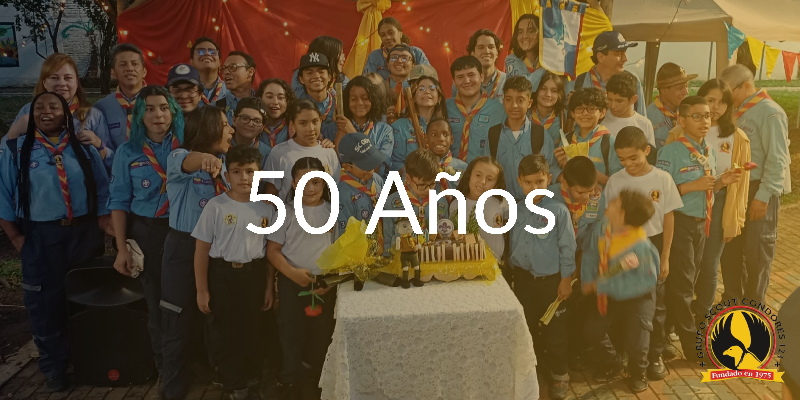

Los Scouts son un movimiento juvenil global que promueve el desarrollo personal y comunitario, enfocado en la educación en valores, el trabajo en equipo, la aventura al aire libre y el respeto por el medio ambiente...
El Grupo Scout Cóndores 123, ubicado en Cali, Colombia, es una comunidad de jóvenes que busca fomentar el desarrollo integral a través de experiencias únicas de aprendizaje...
